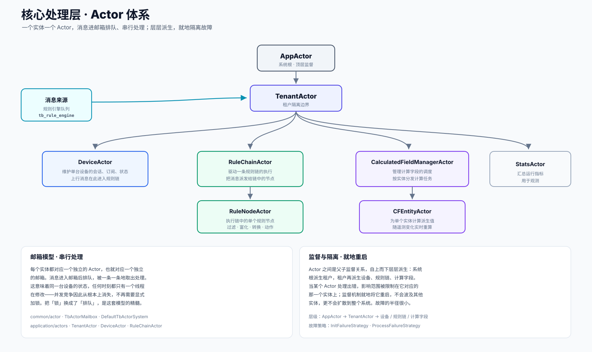
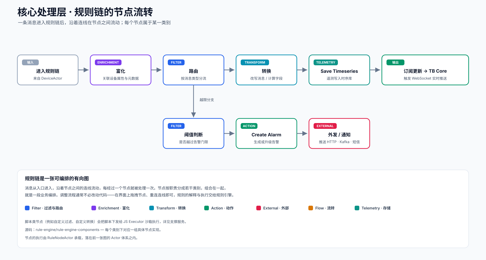

三个服务，各盯一处瓶颈
把核心处理层拆成三个并列服务，背后是一个朴素的判断：状态与处理，承受的压力并不一样。维护设备在线状态、订阅关系、会话连接，关注的是一致性，这块工作天然带状态，难以随意复制；而规则链处理则可以做成无状态的，谁来处理都一样，因此能够沿水平方向自由扩展。把这两类工作放进不同的服务，各自就能按照自己的瓶颈独立扩容，互不牵制。
EDQS 是其中相对独立的一个。它把仪表盘那类复杂的实体查询从主数据库分担出来，常驻内存来加速。这样一来，繁重的查询不再与数据写入争抢同一份资源，读与写两条路径得以分开伸缩。
TB Core TB_CORE
平台的状态中枢与对外门面。设备是否在线、谁订阅了什么、前端连在哪个连接上，都由它掌管。设备状态机、订阅管理、WebSocket 推送、REST 与遥测接口、设备认证、RPC、OTA、告警下发都归属于此。
application · service · controllerTB Rule Engine RULE_ENGINE
数据处理的主战场。它从规则引擎队列取走消息，交给对应设备的 Actor，再沿着规则链一个节点一个节点地处理。过滤、富化、转换、动作、外发等节点族，构成了可灵活编排的业务流程。
rule-engine/rule-engine-componentsEDQS QUERY
实体数据查询服务。它把实体、关系与最新值常驻内存，为仪表盘的复杂筛选与聚合查询加速。通过订阅实体变更保持索引最新，让大表格、地图聚合这类查询不再直接施压于主库。
common/edqs · edqsActor 体系：用排队代替加锁
三个服务都依赖同一套 Actor 骨架来组织内存中的消息流动。它的层级与故障隔离方式，是理解这一层的关键。

设备的状态是天然分片的——A 设备和 B 设备的状态彼此无关。Actor 模型恰好顺着这种特性来组织：给每个实体配一个独立的 Actor，每个 Actor 守着一个邮箱，消息进来先排队，再被一条一条取出处理。这意味着同一台设备的状态，任何时刻都只有一个线程在修改，并发竞争因此从根本上消失，不再需要显式加锁。把"锁"换成了"排队"，正是这套模型的精髓。
层级关系也带来了清晰的故障边界。系统根 AppActor 向下派生租户，租户再派生设备、规则链、计算字段这些具体实体。当某个 Actor 处理出错，影响范围被牢牢限制在它所对应的那一个实体上；监督机制就地将它重启，既不会波及其他实体，也不会扩散到整个系统。
规则链：一张可拖拽编排的有向图
规则引擎处理消息的方式，是让消息在一张由节点组成的有向图里流动。下面是一条遥测消息可能经过的典型路径。

消息从入口进入规则链，沿着节点之间的连线流动，每经过一个节点便被处理一次。节点按职责分成若干类别：Filter 负责过滤与路由，Enrichment 负责补充上下文，Transform 负责改写与计算，Action 负责存盘、告警等动作，External 负责把数据外发到第三方端点。把这些节点组合起来，就是一段完整的业务编排。
调整这段编排，通常并不需要改动代码——在界面上拖拽节点、重新连线即可，规则的解释与执行交给规则引擎完成。需要自定义逻辑的脚本类节点，会把脚本下发给独立的 JS Executor 沙箱执行，这部分在支撑服务里展开。每一个节点的实际执行，则由前一节提到的 RuleNodeActor 承载。
为什么把状态与处理分开
如果把状态维护与消息处理合并到同一个服务里，扩容时就会遇到一个尴尬：处理能力本该随设备规模线性扩展，却被绑在了难以复制的状态服务上，想扩也扩不动。把它们拆开之后，规则引擎可以做成无状态、随时增减实例的水平扩展单元，TB Core 则专注守好状态这块相对棘手的部分。两者各自演进、各自伸缩。
EDQS 的独立同样出于这个思路。仪表盘上"筛出某租户全部在线的温度传感器，再按楼层聚合"这类查询，落到关系数据库上既消耗资源、又会与写入相互争抢。把它单独承载、常驻内存之后，这类查询不再触碰主库，主库便能安心承担写入。读与写两条路径就此分离，各扩各的。
在整条链路中的位置
核心处理层从消息总线取走数据，处理后一路落入持久化层，同时把结果回送给前端。它是整条链路的中枢。
上行的遥测在这里被规则链处理、落库，并触发回送前端的订阅更新；下行的 RPC 也在这里完成设备定位与命令分发。总览页的端到端数据流里那些标着序号的处理步骤，绝大多数都发生在这一层之内。
源码位置
Actor 体系
Actor 系统、邮箱、监督策略与应用层各类 Actor。
common/actor · application/actors规则引擎
规则节点的分类实现与规则链执行。
rule-engine/rule-engine-components实体查询服务
EDQS 的内存索引与实体数据查询。
common/edqs · edqs